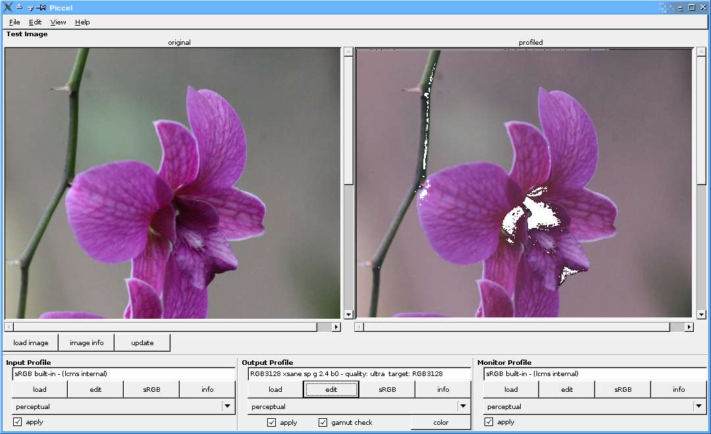

screenshots:

main window
edit window, showing b2a0 clut tab
build window, where parameters are specified to build a CLUT.
overview:
As the acronym is mangled ('Profile ICC Editor Linux') it is perhaps accurate that this is more of a 'mangler' than an editor, at least in its current incarnation.
in addition to being a port of LabWarp, it is also something of a gui for little cms.
sadly, this software currently (and perhaps always) is incapable of actually importing a profile and modifying its LUTs slightly and saving them. what it does instead is import the structure of a color profile and support the generation of new LUTs within it based on input parameters which you can control. if your existing profile is 'almost there', this may not help much; if you want to start with a standard profile and do some cycles of test-modify-test, this will help you.
currently this only builds 3x3 rgb cluts; probably it can be used to inspect other profiles without difficulty.
labwarp and its linux port piccel create cluts by generating a 3x3 clut in lab space, modified according to the spinwheel settings in the build window, then converted to xyz and then rgb spaces. in attempting to work backwards from the rgb values in a profile clut to the spinwheel settings, the first problem is that the xyz<->rgb transform is not sufficiently reversible in my hands to get the original values back out.
be advised that the curve adjustments rely on gnome curve widgets, and they're really not adequate for the level of control desired to properly work on the various input and output curves of a color profile; in particular, they don't return the data submitted to them even without modification. despite this, I have left them in as a learning tool to provide a means to see what the effect is of changing the various curves within a profile.
usage:
the normal steps I progress through are:
hopefully most of the gui is self explanatory, however some knowledge of the 'update' and 'save as' functionality is probably necessary:
'save as' will output the current working profile to a named file with any curve and text tag modifications as shown in the gui, plus the *last modified* LUT. the point to note is that if you go through and modify several luts, unless you save and reload each time your 'save as' result will only incorporate the last modified LUT.
'update' essentially saves the profile and last generated LUT to a temp file and then loads it back in (plus updates the profiled image in the main window).
the upshot therefore is that if you want to change multiple LUTs in a profile, just click 'update' as you develop each one. at the end, click 'save as' and the resulting profile will contain all the changes.
in reality, probably b2a0 is the only lut you will wish to modify.
only changes actually cause updates in a profile, unchanged portions are just copied over from the source profile.
there are probably many bugs and problems; I've only really worked on it to be able to work on b2a0 cluts and modify some of the text tags.
building:
I built this initially using glade and later anjuta, though now I pretty much just use emacs. presumably building it requires standard gnome libraries and lcms, but I haven't done any testing to determine the minimum dependendcy set. my development system runs gentoo linux, and I believe that installing glade and anjuta should bring everything in that's needed to buid piccel.
given appropriate dependencies, just do ./configure and make. this will create src/piccel.
future:
Eddie's page indicates that he threw this together in about two weeks of spare time; I've probably put at least four weeks into it, but that's been spread over two years of real time. my main goal recently has been to pull it together to its current minimal state of 'finished' in a big effort to close off a series of projects, so its not really clear how much time or commitment I'll be putting into it from here - perhaps that depends on you.
its pretty clear to me that linux needs continued integration of color management to make things right at least for the photo-geeks and image professionals. cinepaint, gimp and the others are moving in the right direction, but it seems like the options for getting profiles to start with under linux are very limited. argyll is probably the best (and only) option for much of it, but with limited hardware (a scanner) the results still need help.
when I first played with labwarp under wine it came close, but crashed when I tried to load the higher quality 'ultra' argyll profiles. now I've surmounted this issue, but indeed what's really needed is a system to tweek an existing profile rather than the complete rebuild of cluts that the current piccel provides.
I don't as yet have the understanding of icc profiles or their underlying mathematics to be able to do this, but perhaps the next step will be some integration or absorption of part of the argyll code base and/or tools. if you are interested in helping to move this forward in some way, please drop me a line.
some questions:
downloads:
piccel-0.2.tar.bz2 source code distribution, including an argyll profile and jpg image automatically loaded by include piccel.init file.
profiles.tar.bz2a few profiles I've created, with argyll or lcms (lprof). the profile included in the source distribution above is really poor, have a play with the 'high' or 'ultra' profiles in this set to see something that (almost?) works.
25 march 2007